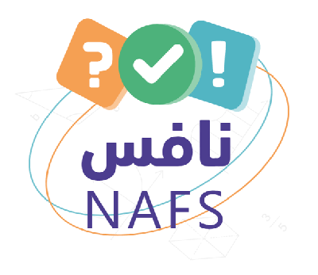

المعادن – جواهر الأرض 💎
الدرس الأول • درس إلكتروني تفاعلي
الفكرة العامة: تشكّل أعداد قليلة فقط من المعادن معظم صخور الأرض، ولكل معدن خواص فيزيائية تميّزه وتُستخدم في تعرّفه.
إعداد: د. أفنان الطلحي
ابدئي الرحلة ✨🎯 في هذا الدرس
الأهداف
✔ تحدّدين الفرق بين المعدن والصخر.
✔ تصفين الخصائص المستخدمة في تحديد المعادن.
الأهمية
المعادن مواد أساسية في الطبيعة يستخدمها الإنسان في أغراض مختلفة.
المفردات (انقري الكلمة)
🔎 أين تبحثين عن المعادن؟
افترضي أنك تخطّطين للبحث عن المعادن… هل تبحثين عنها داخل كهف أم تخترقين أعماق منجم؟ في الواقع يمكنك إيجادها بسهولة في بيتك!
🧂 علبة الملح
✏️ قلم الرصاص
🥛 الأواني الزجاجية
📒 دفتر العلوم: لاحظي صخرة أو عيّنة معدن، وصِفي ثلاثًا من خواصّها (مثل: اللون، والتركيب، والقساوة، والكثافة).
💎 ما المعدن؟
انقري كل بطاقة لتكشفي الشرط
يُعرف حتى الآن أكثر من 4000 معدن، ولكل معدن خصائص مميزة يمكنك بواسطتها تعرّفه.
🎮 نشاط: معدن أم ليس معدنًا؟
انقري كل بطاقة:
تنبيه: الأوبال يعدّه بعضهم معدنًا نفيسًا، لكنه شبه معدن؛ لأن تركيبه مرتب جزئيًّا فقط.
🌋 كيف تتشكّل المعادن؟
🔷 الشكل البلوري
✅ ماذا قرأت؟
ما الذي يميّز البلورات عن الأنواع الأخرى من المواد الصلبة؟
⚠️ مفهوم شائع غير صحيح
«المعدن بلوري فقط إذا ظهر له شكل بلوري مثل بلورة الملح».
💡 معدن البيريت يتكوّن عادة من بلورات سداسية الأوجه، لونه ذهبي ولمعانه فلزي؛ لذلك يبدو كالذهب.
🧪 خصائص المعادن
كما تعرفين صديقتك بين الناس من لون شعرها وشكل عينيها، تتميّز المعادن بخصائص فيزيائية تميّز كل معدن من غيره.
البلورات منتظمة الشكل؛ فالهاليت (الملح الصخري) بلوراته مكعبة، والبيريت بلوراته سداسية الأوجه.
الانفصام: انفصال المعدن لدى تجزئته إلى قطع ذات سطوح ناعمة ومنتظمة وعاكسة للضوء؛ بسبب وجود مناطق ضعف داخل ترتيب الذرات.
المكسر: تكسّر المعدن إلى قطع ذات سطوح خشنة أو منحنية.
🍰 تشبيه: الانفصام يشبه فصل طبقات الكعكة عند طبقة الكريمة الضعيفة.
اللون الذهبي المحمرّ في بعض قطع النقد يشير إلى احتوائها على النحاس، ويتميّز الكبريت بلونه الأصفر اللامع. لكن قد يكون اللون خادعًا: فالبيريت أصفر لامع مثل الذهب ويُسمّى «ذهب المغفّلين»، والكالسيت يظهر بألوان مختلفة بسبب الشوائب.
💪 القساوة ومقياس موهس
القساوة: مقاومة المعدن للخدش. في عام 1822م صنّف الجيولوجي موهس المعادن حسب قساوتها من 1 إلى 10. المعدن الأقسى يخدش الأقل قساوة.
🔬 اختبري بنفسك
| المعدن | القساوة | مواد معروفة |
|---|
🧮 تطبيق العلوم: ما مدى قساوة هذه المعادن؟
خُدشت خمسة معادن بالظفر وقطعة النقد والسكين والفولاذ: الجرافيت خدشته كل الأدوات، والهاليت لم يخدشه الظفر فقط، والتركواز خدشه السكين والفولاذ فقط، والياقوت والزمرد لم تخدشهما أي أداة.
1) هل يمكن ترتيبها جميعًا من الأقسى إلى الأقل قساوة؟
2) كيف نحدّد الأقسى: الياقوت أم الزمرد؟
✏️ المخدش واللمعان
اختاري معدنًا ثم احكّيه على لوح الخدش
✨ اللمعان (البريق)
يصف كيفية انعكاس الضوء عن سطح المعدن:
• فلزي: يلمع كالفلزات، مثل البيريت.
• غير فلزي: لؤلؤي، أو زجاجي، أو باهت، أو ترابي.
💡 حقيقة: تمتاز المعادن الفلزية بأن لها مخدشًا داكن اللون.
🧲 خواص خاصة: تصنيف المعادن
تُظهر بعض المعادن خواص غير عادية، منها المغناطيسية والتفاعل مع الأحماض. 🥽 السلامة: النظارات الواقية ومعطف المختبر.
🗣️ شفهيًّا: أيّ الخصائص تميّز الكوارتز عن الكالسيت؟
🪨 المعادن الشائعة
المعادن المكوّنة للصخور
على الرغم من وجود أكثر من 4000 معدن فإن المعادن المكوّنة للصخور قليلة جدًّا (نحو 24 معدنًا).
المعادن السيليكاتية
تتكوّن من السيليكون والأكسجين؛ فالكوارتز سيليكا نقية (SiO₂).
الكربونات
تتكوّن من الكربون والأكسجين، وتدخل في تركيب الحجر الجيري المستخدم في البناء.
الجبس والهاليت
تكوّنا في قيعان البحار القديمة المتبخّرة، والجبس متوافر بكثرة في مناطق عديدة.
✅ ماذا قرأت؟ ما أهمية معدن الفلسبار السيليكاتي؟
💍 الأحجار الكريمة والخامات
💎 الحجر الكريم
معدن نادر قابل للقص والصقل، مما يعطيه مظهرًا جميلًا يجعله مثاليًّا لصناعة الحُلي. ويجب أن يكون نقيًّا خاليًا من الشقوق والعيوب، جميل اللمعان واللون.
🌋 كيف يتكوّن الماس؟
يتكوّن من عنصر الكربون تحت ضغوط مرتفعة جدًّا في الستار، ثم يخرج إلى السطح بثوران بركاني يُرغم الصهارة على الصعود بسرعة حاملة معها قطع الماس.
⛏️ الخامات
يُسمّى المعدن خامًا إذا احتوى ما يكفي من مادة مفيدة يمكن بيعها وتحقيق أرباح منها: الحديد للفولاذ من الهيماتيت، والرصاص للبطاريات من الجالينا، والماغنسيوم للفيتامينات من الدولوميت. ويتم استخراجها بطريقة تُسمّى التعدين.
🔥 معالجة الخامات
بعد استخراج الخام يجب معالجته؛ فللحصول على النحاس يُصهر الخام ثم يُنقّى من المعادن غير المرغوب فيها، ويُستخدم النحاس في التوصيلات الكهربائية في المنازل والسيارات والأجهزة.
🕌 ألوان الجبال… من آيات الخالق
﴿ وَمِنَ الْجِبَالِ جُدَدٌ بِيضٌ وَحُمْرٌ مُّخْتَلِفٌ أَلْوَانُهَا وَغَرَابِيبُ سُودٌ ﴾ [فاطر: 27]
تختلف ألوان الجبال باختلاف المعادن المكوّنة لصخورها.
🇸🇦 وطني
تتميّز دول الخليج بوجود معادن أو صخور أو أحجار كريمة خاصة بها؛ فالمملكة العربية السعودية مثلًا تشتهر بوجود معدن الذهب. هل تتميّز منطقتك بمعدن أو صخر أو حجر كريم خاص؟

نحو نافساختاري الإجابة الصحيحة… الدرجة: 0 /
📝 مراجعة الدرس (ص 138)
🎮 الألعاب والواقع المعزّز
💎 لعبة «مغامرة كهف الجواهر»
✍️ قبل أن تغادري
أهم شيء تعلّمتُه اليوم عن المعادن:
قيّمي فهمك:
وسام «خبيرة المعادن»
العلوم • أول متوسط • د. أفنان الطلحي